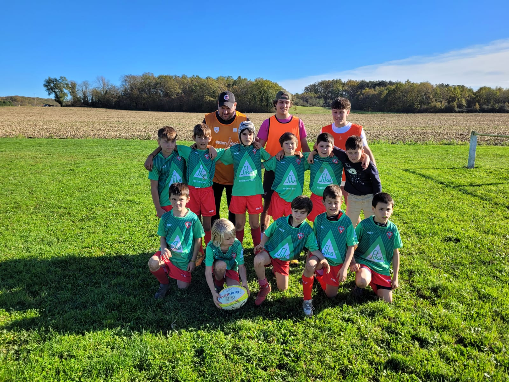
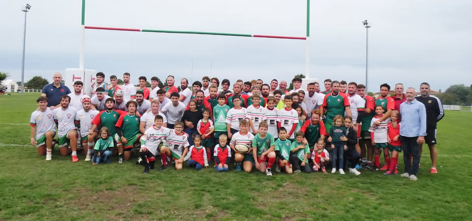

En parallèle de mon rôle de joueur senior, je suis également entraîneur à l’école de rugby de l’ASM Miramont-de-Guyenne. Cet engagement me permet de transmettre aux plus jeunes les valeurs et les enseignements que j’ai moi-même reçus en grandissant dans ce club.
Encadrer l’école de rugby consiste à accompagner les enfants dans leur découverte et leur apprentissage du rugby, à travers des entraînements, des ateliers techniques et des plateaux le week-end. Au-delà de l’apprentissage du jeu, l’objectif est surtout de transmettre les valeurs fondamentales du rugby : respect, solidarité, entraide et esprit d’équipe.

Être entraîneur implique également une véritable responsabilité éducative. Il ne s’agit pas seulement d’enseigner un sport, mais aussi d’accompagner les jeunes dans leur progression, de les encourager et de leur permettre de prendre confiance en eux. À travers cet engagement, j’ai développé des compétences importantes telles que la pédagogie, la gestion de groupe, l’adaptation aux différents profils et l’écoute.
L’école de rugby occupe une place essentielle dans la vie du club. Elle constitue la base du projet sportif et humain de l’ASM, en formant les futurs joueurs mais aussi en transmettant une culture du club et un esprit collectif.
Cet engagement permet également de créer un lien intergénérationnel fort, puisque les joueurs seniors, les éducateurs bénévoles, les parents et les enfants participent ensemble à la vie du club.

Au-delà du terrain, l’école de rugby est aussi un lieu de convivialité et de partage, à travers différents moments organisés dans l’année : tournois, événements du club ou encore temps festifs qui rassemblent enfants, familles et bénévoles.

Ainsi, mon rôle d’entraîneur à l’école de rugby s’inscrit dans une volonté de transmettre à mon tour ce que le club m’a apporté depuis mon enfance. C’est une manière de contribuer activement à la vie associative locale et de participer au développement des générations futures de joueurs.